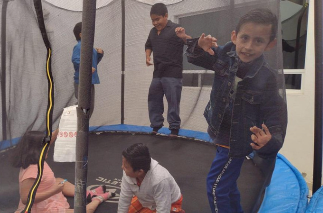
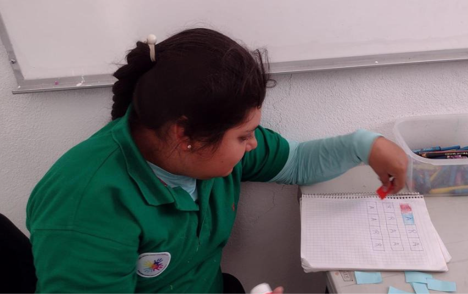

<!DOCTYPE html>
<html lang="en"></html>
<head>
  <meta charset="UTF-8" />
  <meta http-equiv="X-UA-Compatible" content="IE=edge" />
  <meta
    name="viewport"
    content="width=device-width, initial-scale=1.0"
  />
  <link
    rel="shortcut icon"
    href="assets/favicon.ico"
    type="image/x-icon"
  />
  <!-- Global CSS -->
  <link rel="stylesheet" href="../styles/styles.css" />
  <link rel="stylesheet" href="../styles/nav/index.css" />

  <link
    rel="stylesheet"
    href="../styles/pages/comunidad/comunidad.css"
  />
  <title>Ana Cristina Juárez Diez Marina I.A.P.</title>
</head>
<body>
  <nav class="nav">
    <div class="nav_logo">
      
    </div>
    <div class="nav_hamburger_container">
      <div class="nav_hamburger">
        <div></div>
        <div></div>
        <div></div>
      </div>
    </div>
    <div class="nav_links">
      <a class="nav_link" href="autismo.html"> ¿Qué es autismo? </a>
      <a class="nav_link" href="informacion.html"> Información </a>
      <a class="nav_link" href="views/work.html"> Nuestro trabajo </a>
      <a class="nav_link" href="views/partners.html">
        Nuestros socios
      </a>
    </div>
  </nav>
  <div class="barra">
    <div class="titulo">
      <h1>COMUNIDAD</h1>
      <div class="contenido">
        <div class="image">
          
        </div>
        <div class="texto">
          <p>
            Dentro de la Institución Ana Cristina Juárez Diez Marina,
            tenemos una población de más de 40 beneficiarios entre los
            3 y los 16 años de edad. Los niños y jóvenes son atendidos
            por 16 colaboradores entre terapeutas, asistentes y demas
            personal. En nuestro centro contamos con áreas muy
            particulares para cada tipo de terapia y un salón para
            fisioterapia y ballet; en donde les podemos ofrecer a los
            niños y jóvenes con Autismo los cuidados especializados
            que se adaptan a sus necesidades y capacidades.
          </p>
        </div>
      </div>
    </div>
  </div>
  <div class="scrolled">
    <h1 class="titulo">Nuestros Planes</h1>
    <div class="contenido">
      <div class="planes">
        Tenemos planes en el mediano plazo de implementar proyectos
        auto-sustentables que logren en primer lugar, incrementar el
        crecimiento y desarrollo de nuestros niños y jóvenes
        beneficiarios.<br /><br />
        En segundo, que la institución obtenga recursos para mejorar
        los servicios y ampliar la infraestructura. Estos proyectos
        están contemplados en el área financiera y operativa, así como
        en el área de mejorar los conocimientos terapéuticos.<br />
        <br />
        Unos de nuestros proyectos más importantes a corto plazo es la
        creación de un centro de día. En éste tenemos planeado ofrecer
        a los niños talleres en el que puedan adquirir nuevas
        habilidades en un horario extendido.
      </div>
      <div class="imgplanes">
        
      </div>
    </div>
  </div>
  <footer class="footer"><br /><br /><br /><br /></footer>
</body>
